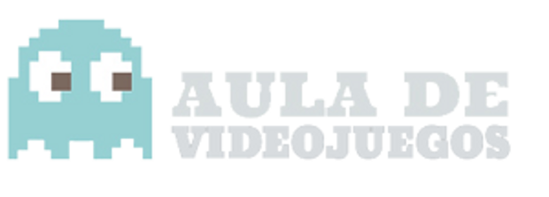
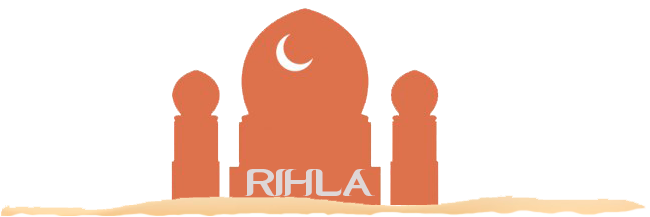

La palabra rihla, que propiamente significa «viaje por etapas», designa tanto el viaje como la posterior crónica del mismo.
WALKING SIMULATOR
Una experiencia ludonarrativa del Aula de Videojuegos de la Facultad de Comunicación de la Universidad de Sevilla.
 